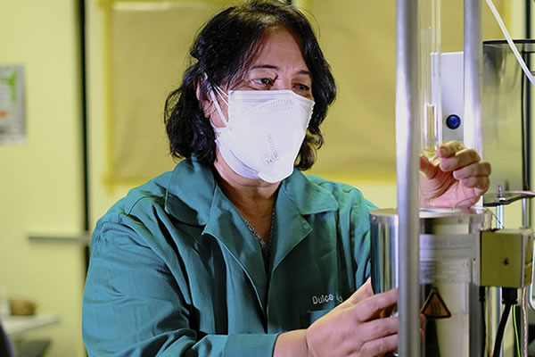
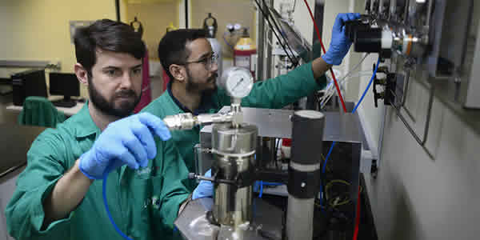
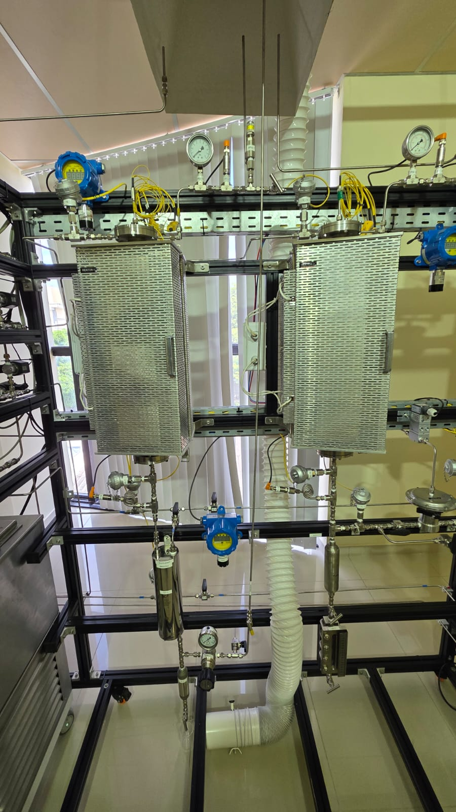

Sobre o LabTam
Excelência, sustentabilidade e governança na pesquisa científica
LabTam/Nupprar — uma infraestrutura multiusuária da UFRN voltada à pesquisa, formação de pesquisadores e inovação tecnológica.
Missão e Visão
O Laboratório de Tecnologia Ambiental (LabTam), vinculado ao Núcleo de Pesquisa em Petróleo, Energias e Recursos Renováveis (Nupprar) da Universidade Federal do Rio Grande do Norte (UFRN), tem como missão promover a pesquisa científica de excelência, assegurando o uso responsável e sustentável da infraestrutura multiusuária.
Sua visão é consolidar-se como um Centro Temático Multiusuário de Referência Nacional, reconhecido pela qualidade das análises, pela ética na governança e pelo impacto positivo na formação de pesquisadores e na inovação tecnológica.
Produção científica
+300 publicações internacionais e 14 patentes
Produção com impacto em ciência, tecnologia e sustentabilidade.
Ver publicaçõesGovernança Ética e Sustentável
O LabTam atua sob um modelo de gestão transparente e participativo, sustentado por um regimento próprio, um comitê gestor e um comitê de usuários. Essa estrutura garante o uso eficiente dos recursos e o alinhamento com as políticas institucionais da UFRN, fortalecendo a ética da governabilidade e a sustentabilidade acadêmica e financeira do laboratório.
Infraestrutura e Qualidade Analítica
Com uma infraestrutura multiusuária de alto desempenho, o Labtam oferece suporte técnico e científico a pesquisadores e estudantes de diversas unidades acadêmicas da UFRN, como também atende as empresas quando solicitado. Com equipamentos de última geração que permitem análises avançadas em caracterização de materiais, química, biotecnologia e energias renováveis, assegura resultados de alta confiabilidade.
Essa capacidade técnica eleva o padrão das pesquisas desenvolvidas nos programas de pós-graduação, contribuindo para a formação de profissionais qualificados e para o avanço da ciência nacional.
Integração com a Sociedade Científica
O LabTam/Nupprar atua como elo entre a universidade e a sociedade científica, oferecendo serviços e parcerias que impulsionam a inovação e o desenvolvimento tecnológico. Sua atuação fortalece a integração entre diferentes áreas do conhecimento e estimula a cooperação entre instituições, consolidando a UFRN como referência em pesquisa aplicada e formação de excelência.
Projeção Futura
O futuro do LabTam está voltado à expansão de sua infraestrutura e à integração com novas plataformas tecnológicas, como o Hub Multi-TRL da UFRN. Essa iniciativa permitirá atender a diferentes níveis de maturidade tecnológica, ampliando o escopo de análises e serviços oferecidos à comunidade científica e ao setor produtivo.
A meta é consolidar o LabTam como um Centro Temático Multiusuário de Referência Nacional, capaz de sustentar projetos estratégicos nas áreas de química, engenharia, energia e meio ambiente.
Áreas de Pesquisa
Descarbonização, Catálise, Produção de Hidrogênio de baixo carbono, Materiais Nanoestruturados, Materiais especiais e Semicondutores, Aprendizado de máquina, Produção de SAF e Bioeconomia.
Galeria
LabTam em imagens


